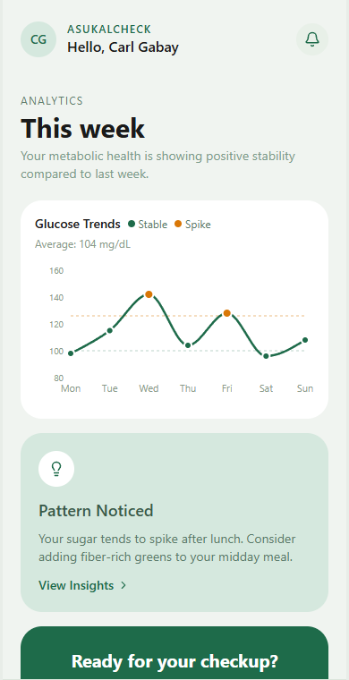
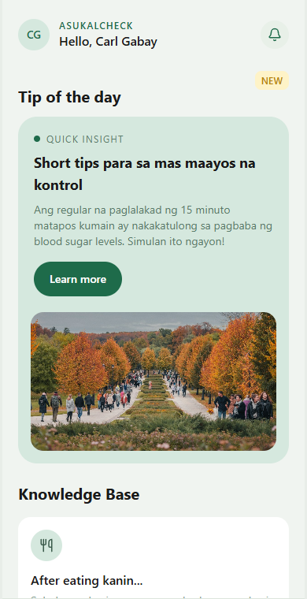

Team Project
Featured prototypes
A focused walkthrough of our class prototypes, from mobile health screens to student dashboard flows and a simple file utility. Each project shows how we practiced layout, interaction, and user-focused web design.


Tap any preview to open a larger view of the prototype screens and practice builds.
Mobile app prototype
Asukal Check is an interactive mobile health prototype focused on making blood sugar tracking feel simple, calm, and readable. The flow helps a user log readings, review weekly glucose trends, and receive practical lifestyle tips without overwhelming them with too much medical-looking information at once.
Made with: Figma, HTML, CSS, JavaScript
Student dashboard prototype
StudyBase is a student productivity prototype designed as a central hub for everyday academic life. It combines class schedules, assignment deadlines, finance tracking, savings, grades, and study planning into one dashboard so students can quickly understand what needs attention.
Made with: Figma, HTML, CSS, JavaScript
Web utility project
File Vault is a straightforward web utility for collecting and browsing document resources. The project focuses on a simple upload flow, visible file cards, and search behavior that helps users find saved PDF files without digging through folders manually.
Made with: HTML, CSS, JavaScript